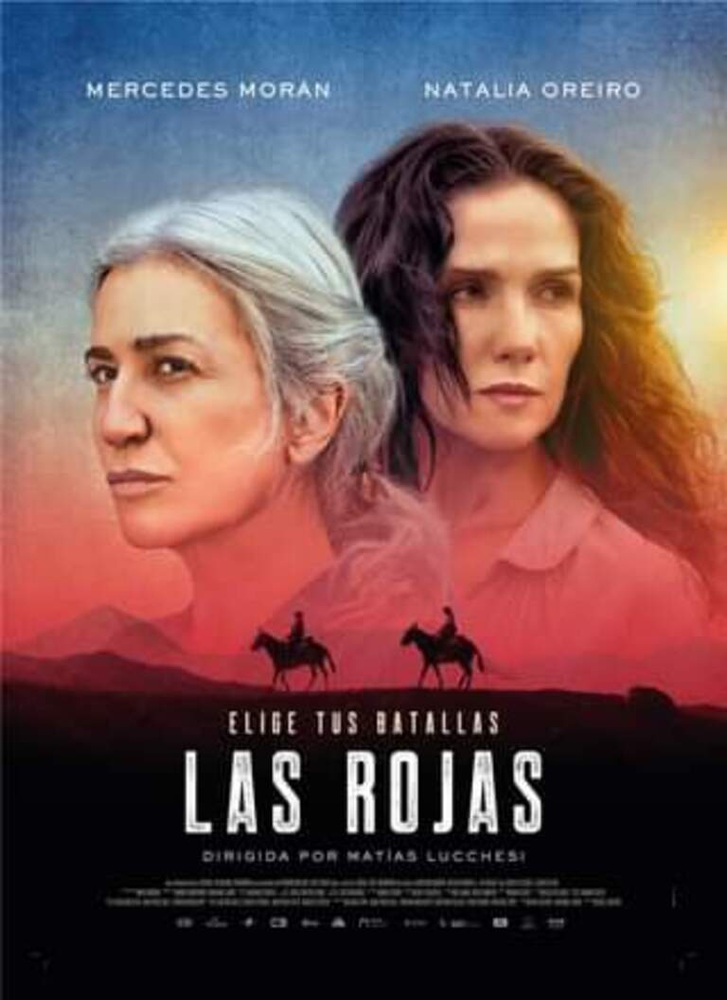
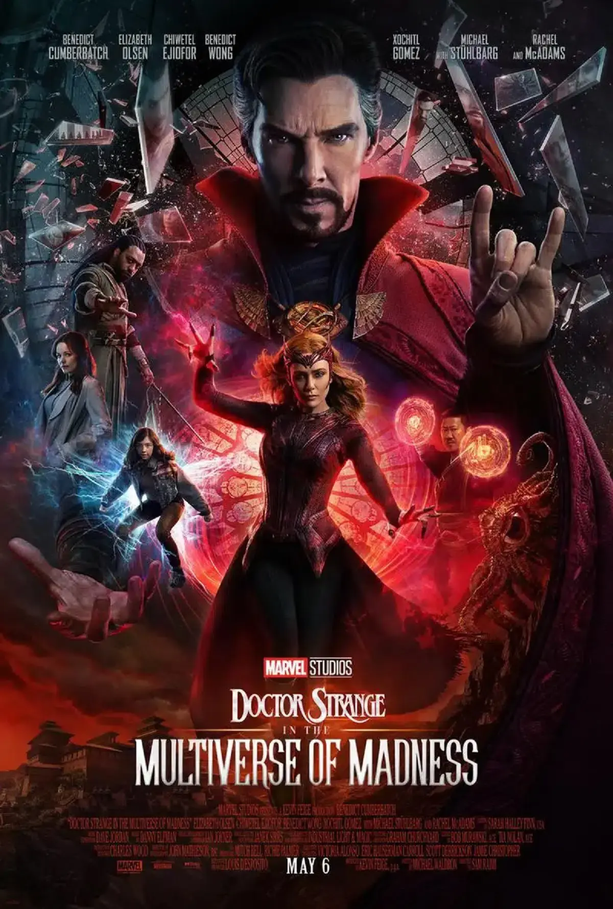
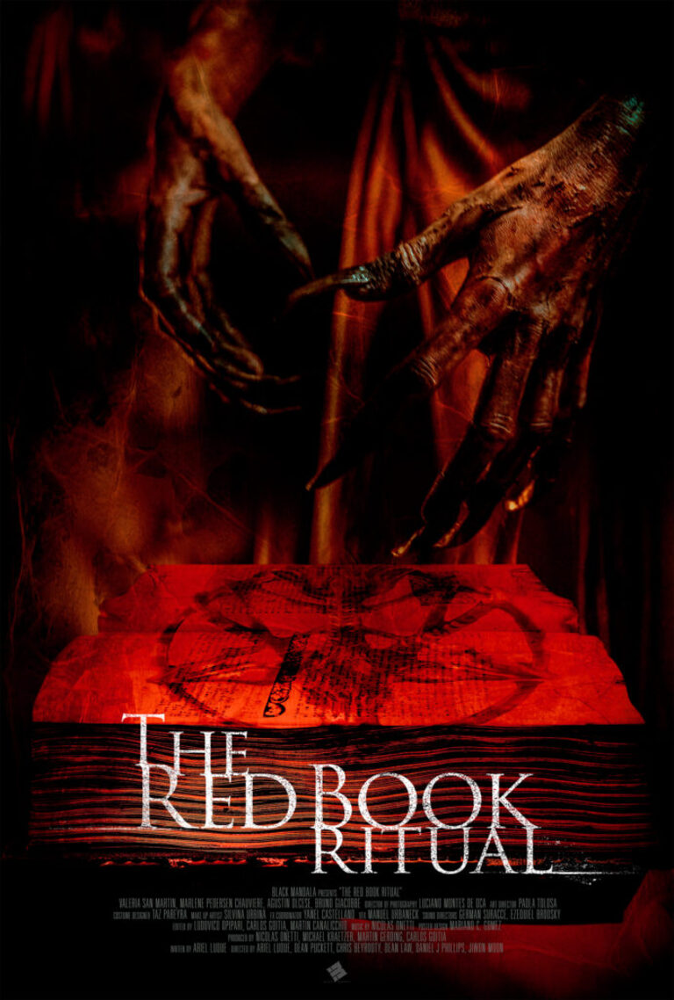
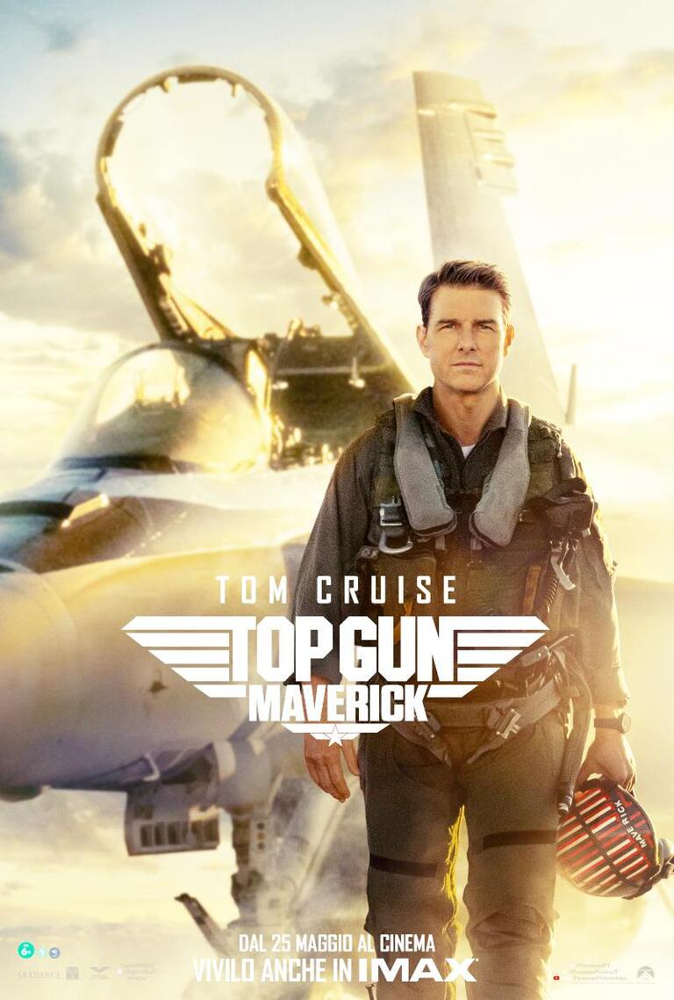
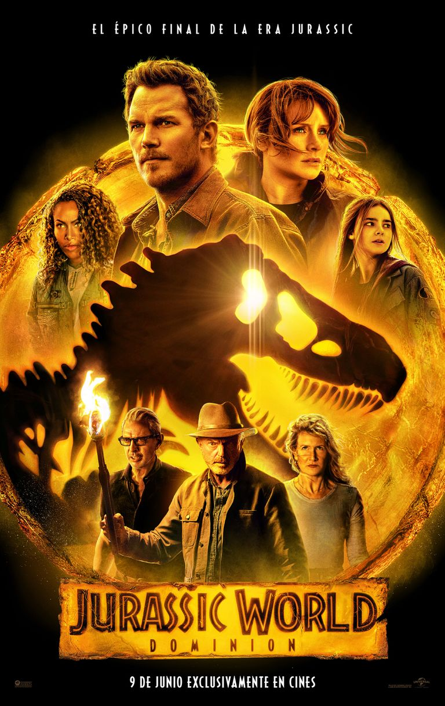

Nuestra Cartelera
Las Rojas
En un recóndito campamento en las montañas, Carlota, una reconocida paleontóloga, custodia el hallazgo más importante de su carrera científica: los restos fósiles de un hipogrifo, animal mítico mitad ave mitad león del que no se tiene certeza de su existencia. La llegada de Constanza, una bióloga enviada a supervisar los trabajos de Carlota, y de Freddy, un viejo rival con oscuras intenciones, obligan a Carlota a enfrentarse con un enemigo poderoso que amenaza con destruir el territorio y sus recursos naturales.
Doctor Strange 2
Ahora que Iron Man y el Capitán América se han ido después de una feroz batalla en Avengers: Endgame, se espera que el ex genio cirujano y mago más fuerte de todos, el Doctor Strange, juegue un papel activo como figura central en los Vengadores. Sin embargo, usar su magia para manipular el tiempo y el espacio a voluntad con un hechizo prohibido que se considera el más peligroso, ha abierto la puerta a una misteriosa locura llamada 'el Multiverso'. Para restaurar un mundo en el que todo está cambiando, Strange busca la ayuda de su aliado Wong, el Hechicero Supremo, y la Bruja Escarlata más poderosa de los Vengadores, Wanda. Pero una terrible amenaza se cierne sobre la humanidad y el universo entero que ya no puede sostenerse con sólo su poder. Aún más sorprendente, la mayor amenaza en el universo luce exactamente como Doctor Strange.
El Ritual Del Libro Rojo
Tres amigos deciden jugar a “El Libro Rojo”. Lo que no saben es que en la casa que habitan el mal espera ser liberado; hace mucho tiempo una bruja murió como parte de un ritual satánico. Comienza el juego y cada pregunta que hacen los acerca más y más a ella.
Top Gun: Maverick
Después de más de 30 años de servicio como uno de los mejores aviadores de la Armada, Pete "Mavericks" Mitchel (Tom Cruise) se encuentra donde siempre quiso estar, superando los límites como un valiente piloto de pruebas y esquivando el ascenso de rango, que no le dejaría volar emplazándolo en tierra. Cuando se encuentra entrenando a un grupo de graduados de Top Gun para una misión especializada, Maverick se encuentra allí con el teniente Bradley Bradshaw (Miles Teller), el hijo de su difunto amigo "Goose".
Jurassic World Dominion
Cuatro años después de la destrucción de Isla Nublar, los dinosaurios ahora viven y cazan junto a los humanos en todo el mundo. Este frágil equilibrio remodelará el futuro y determinará, de una vez por todas, si los seres humanos seguirán siendo los depredadores máximos en un planeta que ahora comparten con las criaturas más temibles de la historia.